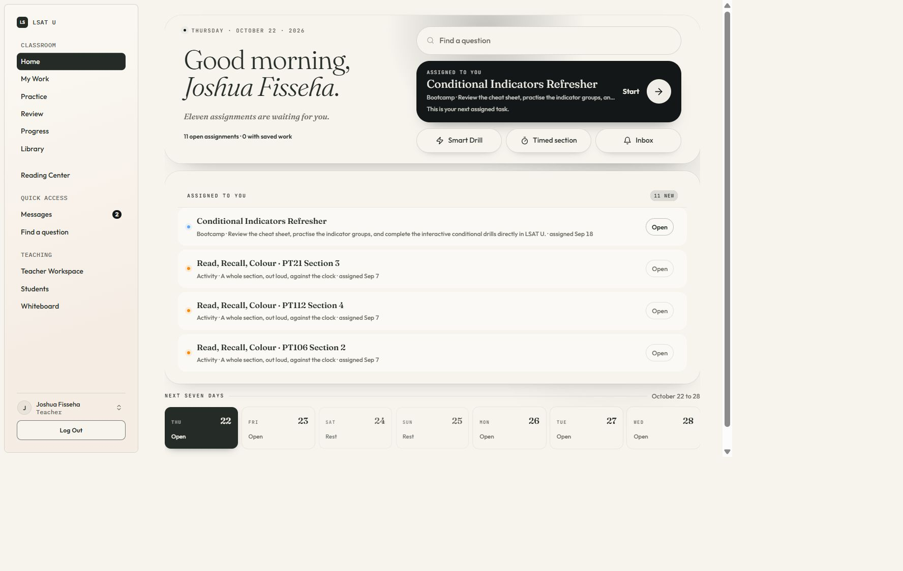
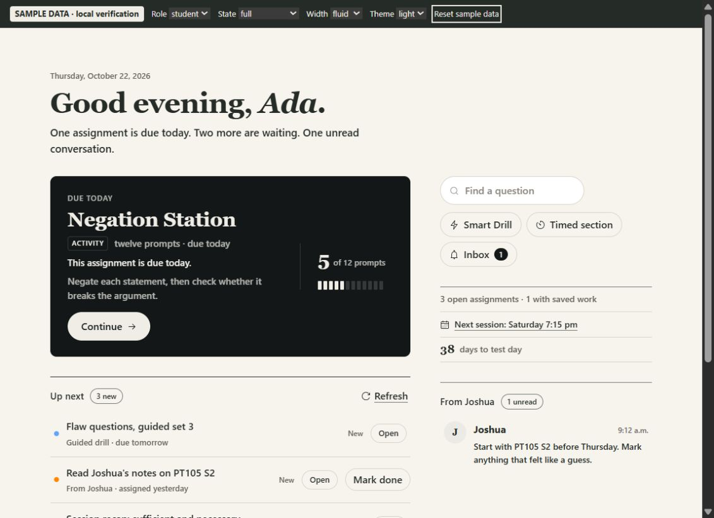
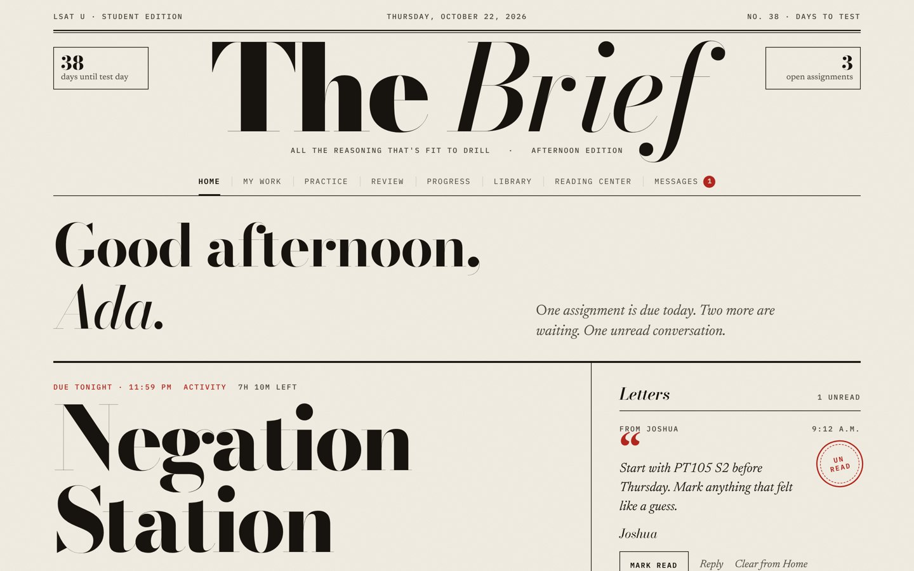
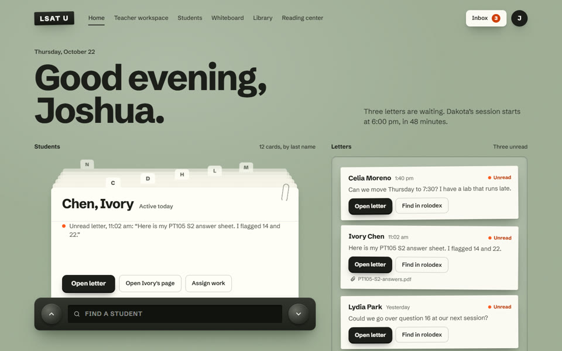
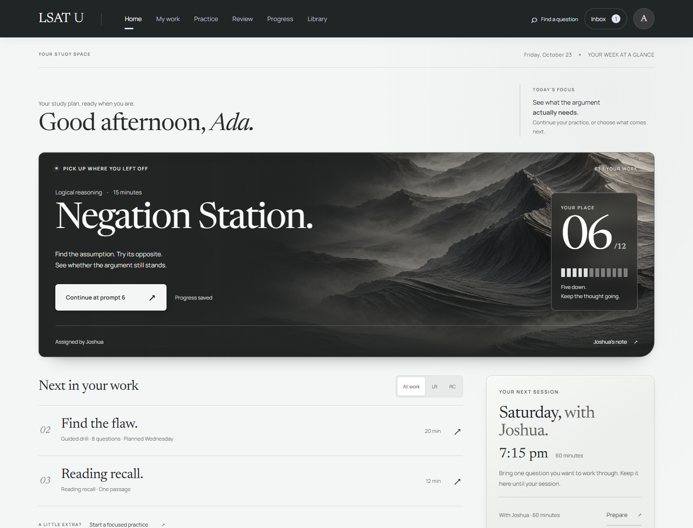

LSAT U: what to take forwardLSAT U / COMPARISON REVIEW / 2026-10-24
What to take forward.
Keep the current sidebar and separate destinations. Combine the strongest visual details and useful interactions from the earlier artifact family, Claude Code studies, and later Codex iterations.
Recommended combination: Refined's type and alignment + Lamplight's one-task emphasis + Marginalia's contextual notes + Carrel's message anatomy + Atmosphere's quiet landscape detail. Keep richer lookup in Practice / Find a question and results in Review. Library remains lessons, activities and bootcamps.
These are existing historical screenshots inspected during this review. Click any image for readable full-size evidence. They are not a newly built hybrid or fresh production captures.
21 comparison entries

Baseline
Existing compact layout
Take: Persistent sidebar; compact next task beside greeting; work and messages; small week strip.
Use in: Home + navigation
Adapt: This is historical screenshot evidence. The user-supplied 2026-10-24 screenshot is the preferred structural reference.
Evidence file
C:\Users\Joshu\Downloads\LSAT-U-Dashboard-2026-10-22\teacher-before-1440.png
Baseline
Student role handoff
Take: One Continue action with exact saved position and compact progress marks.
Use in: Home + My Work
Adapt: Compress the card on phone; populate progress from actual saved state.
Evidence file
C:\Users\Joshu\Downloads\LSAT-U-Dashboard-Handoff-2026-10-22\student-dashboard.png
Teacher
Teacher role handoff
Take: Separate student search, assignment action, unread conversations and upcoming sessions.
Use in: Teacher workspace
Adapt: Preserve account roles and operational grouping; tighten unused space.
Evidence file
C:\Users\Joshu\Downloads\LSAT-U-Dashboard-Handoff-2026-10-22\teacher-dashboard.png
Earlier artifact family
The Brief / Broadsheet
Take: Editorial rules, serif work titles, compact dateline and a specific due-state accent.
Use in: My Work + Home headings
Adapt: Borrow small details; giant masthead and repeated greeting cost too much space.
Evidence file
C:\Users\Joshu\Downloads\LSAT-U-Dashboard-Three-Directions\screenshots\broadsheet-student-1440-top.jpg
Earlier artifact family
Meridian
Take: Exact resume location; completed versus remaining work reads immediately.
Use in: Home resume + My Work
Adapt: Keep concise ticks/counts; omit giant bezel and broad timeline.
Evidence file
C:\Users\Joshu\Downloads\LSAT-U-Dashboard-Three-Directions\screenshots\meridian-student-1440-top.jpg
Earlier artifact family
Therefore
Take: A reason for the recommended next action: due time, saved place, remaining work.
Use in: Home next assignment
Adapt: One supporting sentence is sufficient. The large premise/conclusion composition remains a study.
Evidence file
C:\Users\Joshu\Downloads\LSAT-U-Dashboard-Three-Directions\screenshots\therefore-student-1440-top.jpg
Claude Code v2
Lamplight
Take: One task dominates through contrast; queue stays quieter; work title remains readable.
Use in: Home compact assignment
Adapt: Transfer emphasis into existing footprint; avoid lamp, flicker and oversized floating paper.
Evidence file
C:\Users\Joshu\Downloads\LSAT-U-Dashboard-Three-Directions-v2\screenshots\lamplight-student-1440.png
Claude Code v2
Carrel
Take: Subtle paper edge, countable completion marks and clear message sender/time/action grouping.
Use in: Home messages + My Work
Adapt: Keep material detail slight; avoid envelopes, tilted piles and furniture.
Evidence file
C:\Users\Joshu\Downloads\LSAT-U-Dashboard-Three-Directions-v2\screenshots\carrel-student-1440.png
Claude Code v2
Marginalia
Take: Context next to the work; precise links; calm dividers; notes feel connected to the task.
Use in: Assignment details + lesson notes + messages
Adapt: Use short context near an action; avoid turning Home into a letter with many footnotes.
Evidence file
C:\Users\Joshu\Downloads\LSAT-U-Dashboard-Three-Directions-v2\screenshots\marginalia-student-1440.png
Teacher
Carrel teacher
Take: Searchable student lookup and time-positioned session agenda.
Use in: Teacher students + schedule
Adapt: Adopt rapid lookup and useful time positioning; literal rotating rolodex is optional and likely unnecessary.
Evidence file
C:\Users\Joshu\Downloads\LSAT-U-Dashboard-Three-Directions-v2\screenshots\thumbs\carrel-teacher-1440.jpg
Later directions
01 Lumen
Take: Quiet light surfaces, dark actions, personal-note treatment, rounded day cards.
Use in: Home calendar + messages
Adapt: Reduce quote-column footprint; prefer a compact week treatment.
Evidence file
C:\Users\Joshu\Downloads\LSAT-U-Dashboard-New-Directions\01-lumen\artifacts\student-1440.png
Later directions
02 Margin
Take: Newsreader/Manrope hierarchy, dark next-action contrast, thin assignment rules, task-specific notes.
Use in: Home + My Work
Adapt: Maintain existing compact card and sidebar. Do not enlarge progress numbers.
Evidence file
C:\Users\Joshu\Downloads\LSAT-U-Dashboard-New-Directions\02-margin\artifacts\margin-1440.png
Later directions
03 Studio
Take: Paper-edge detail, saved-place language, discreet task tabs and session preparation.
Use in: My Work + session preparation
Adapt: Small material accent only; choosing another task must preserve the resumed task.
Evidence file
C:\Users\Joshu\Downloads\LSAT-U-Dashboard-New-Directions\03-studio\studio-1440.png
Later directions
04 Refined
Take: Balanced neutral type, next-session time, clean queue, rounded week and linked agenda.
Use in: Home calendar + session + assignment rows
Adapt: Scale down hero and keep full question tools in their existing destination.
Evidence file
C:\Users\Joshu\Downloads\LSAT-U-Dashboard-New-Directions\04-refined\artifacts\refined-1440.png
Later directions
05 Studio colour exploration
Take: Exact-reference lookup, keyboard search, LR/RC controls, saved/recent questions and actionable results.
Use in: Practice / Find a question + Review
Adapt: Reuse useful functions in the selected neutral palette. Sample questions are not a live bank.
Evidence file
C:\Users\Joshu\Downloads\LSAT-U-Dashboard-New-Directions\05-studio\artifacts\pass-final-1440.png
Later directions
06 Refined Studio
Take: Neutral surface hierarchy, aligned rows, clear reference inputs and question-level result strips.
Use in: My Work + Practice / Find a question + Review
Adapt: Use actual data contracts. Leave the giant sculpture and full console off Home.
Evidence file
C:\Users\Joshu\Downloads\LSAT-U-Dashboard-New-Directions\06-refined-studio\artifacts\final-desktop.png
Later directions
07 Atmosphere
Take: Original paper landscape, controlled charcoal depth and restrained texture.
Use in: Home compact assignment card
Adapt: Artwork should be a quiet fragment behind opaque readable text, within the existing card footprint.
Evidence file
C:\Users\Joshu\Downloads\LSAT-U-Dashboard-New-Directions\07-atmosphere\artifacts\atmosphere-final-hero.png
Mobile
07 Atmosphere phone
Take: Direct phone search access, clear Continue target and compressed horizontal progress.
Use in: Mobile search + resume
Adapt: This hero is still too tall to copy into the compact live layout. Preserve the useful controls, reduce art and scale.
Evidence file
C:\Users\Joshu\Downloads\LSAT-U-Dashboard-New-Directions\07-atmosphere\artifacts\atmosphere-final-phone.png
Motion
Motion study 01: scroll
Take: Explore bounded content reveals while navigation remains stable.
Use in: Page content only
Adapt: Still image cannot establish timing or smoothness. Do not delay first-frame readability.
Evidence file
C:\Users\Joshu\Downloads\LSAT-U-Motion-Studies-2026-10-22\01-desktop.jpg
Motion
Motion study 02: interface
Take: Selected-tab clarity and draft settings with Apply/Cancel.
Use in: Practice setup + drawers
Adapt: Carry keyboard/focus and draft-state safeguards with the visual treatment; no route restructuring.
Evidence file
C:\Users\Joshu\Downloads\LSAT-U-Motion-Studies-2026-10-22\02-desktop.jpg
Motion
LexPrep motion refinement
Take: Short semantic reveals, stable navigation and reduced-motion safeguards documented in source/reviews.
Use in: Existing pages
Adapt: Historical app screenshots, not a separate new dashboard or proof of current deployment. Motion was not replayed in this review.
Evidence file
C:\Users\Joshu\Downloads\LSAT-U-LexPrep-Motion-2026-10-22\home-desktop.png